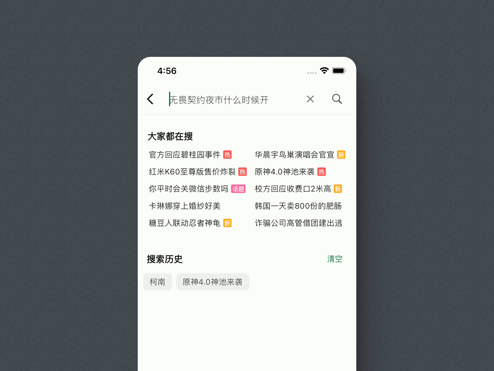

用了 PiliPlus 大半年，才发现它藏着这么多官方客户端没做到位的细节
一个以"去广告壳"闻名的 B 站客户端，背后到底藏着哪些连老用户都没摸透的隐藏功能？这篇从弹幕悬停到收藏夹复制，挖 5 个最实用的冷门技巧。
你以为 PiliPlus官网 就是个去广告的 B 站壳？装完直接看视频、关广告、完事——那真的浪费了这个客户端的大半功力。我用它超过半年，从"只看视频不研究设置"到"翻遍每个角落找不同"，发现它在官方客户端做得糙的地方，悄悄补上了一堆细碎但真能用的功能。藏得真深，官方甚至没在更新日志里专门介绍过，全靠翻菜单翻出来。
弹幕能悬停，这招太香了
弹幕是 B 站的灵魂没错，但官方客户端在弹幕上的交互一直做得很克制——最多就是点一下弹个菜单，或者长按快速屏蔽。PiliPlus 直接把点击弹幕做成了悬停浮窗：全屏播放时点任意一条弹幕，这条弹幕就"定"在画面上不飞走了，同时弹出一排操作按钮——点赞、复制内容、举报，三个动作一步到位。

建议从 下载 直接拿最新版，不同版本之间弹幕设置的位置可能略有差异。这功能藏在哪？播放器全屏状态下，点右上角的弹幕设置图标，往下翻就能找到"点击弹幕操作"的选项。默认就是开启的，可能你点过但没注意。实际用起来：追番时看到有人发了好玩的梗，想复制下来发群里，以前得截长图或者暂停、现在点一下、等浮窗出来、按复制，完事儿——弹幕继续飘，视频继续播，节奏没断。
谁用得上？喜欢潜水看弹幕、偶尔想互动一下的人。如果你从来只开弹幕不关，这功能存在感极强。对弹幕过敏、常年 100% 透明或者直接关掉的人，可以无视，关掉还能省点动画渲染。
收藏夹能复制还能移动
官方客户端的收藏夹管理一直是个痛——视频收藏错了夹、想从 A 夹挪到 B 夹，官方只能先取消收藏再重新藏，等于两遍操作。PiliPlus 在收藏页做了复制/移动的批量操作：进入任意收藏夹、点右上角多选、勾选要动的视频、点底部的复制或移动按钮、选目标收藏夹，完事儿。
更狠的是支持批量。攒了几百条收藏想整理分类？进"我的收藏"、先选源夹、多选、一次移动几十条到新夹，比手动一条条操作快出一个量级。我之前追番把教程混在动画收藏里，用这功能十分钟就拆出了"Python 教程"和"番剧推荐"两个独立夹。
在哪？媒体库 → 我的收藏 → 点进任意收藏夹 → 右上角选多选模式。官方路径是"我的收藏"里只能手动一个个进详情改，对比下来差太多了。
弹幕合并重复，画面瞬间清净
热点视频弹幕区的"前方高能""12345""笑不活了"能刷满半屏，官方客户端给了"关键词屏蔽"，但问题是——有些弹幕没关键词、就是单纯数量多、把画面埋了。PiliPlus 多了个合并重复弹幕的选项：相同内容的多条弹幕会合成一条显示，实际效果从"十几条飘字"变成"一条+数字"，画面清爽度直线上升。
这功能藏在弹幕设置的中间位置，容易被忽略。开启之后还能调合并阈值——几条相同才算重复（默认 3 条以上）。我给几个朋友推荐过这个设置，他们说第一次开的时候盯着弹幕区愣住了："原来这个视频弹幕区这么干净？我以前看的是什么。"
缓存路径能自己选
这个可能是最接地气的一个。现在手机存储空间紧张，默认缓存路径放在内部存储、下几个 1080P 的番剧 G 级占用就没了。PiliPlus 在设置里提供了缓存路径自定义：可以切到外置 SD 卡，甚至指定一个特定文件夹。
在哪？设置 → 存储 → 缓存路径，具体的路径权限说明和老机型兼容方案可以在 PiliPlus文档 里查。切到 SD 卡之后再去媒体库的离线缓存页，显示的占用数字会明显小一大截。注意一点：缓存数据是本地的，卸载应用或者手动清数据就没了，不会云端备份。之前有人换手机直接卸载、几百 G 的缓存视频全没了，这坑踩过的都有印象——缓存能省空间，但别把它当长期存储，定期拷一份到电脑才是正解。
直播区的分区浏览
官方客户端的直播入口一直比较粗——首页顶部一个"直播"tab、点进去就是推荐流，想找特定分区（比如只看虚拟主播）得进频道区再跳。PiliPlus 把直播区的完整分区结构保留了下来：游戏、虚拟主播、生活、电台、音乐，每个分区单独一个入口，点开直接是这个分区下的直播间列表，不用跟推荐算法较劲。
直播弹幕也一样——全屏播放时点弹幕能悬停、发弹幕支持表情、SuperChat 醒目留言完整显示，甚至直播流画质切换的选项也比官方多一档。我偶尔睡前看点虚拟电台，用分区过滤比在推荐流里刷高效多了。
别踩这些坑
藏得深的功能一般副作用也藏得深。说两个我踩过的：
批量删除收藏不可逆。一次整理收藏夹、手滑多选了不该删的、点了确认——官方端能撤销、PiliPlus 没有这个开关。删之前别急着点确认、先数一眼条数。
缓存路径切了 SD 卡之后，某些低端机型会出问题。我之前给旧手机（安卓 9）切过一次、偶尔会出现缓存视频丢失或者播放卡顿，换回内部存储就好了。新一点的机型（安卓 11+）基本没问题。
最后的话
PiliPlus 能火这么久不只是因为去广告，它在那些官方客户端"差不多就行"的地方补的细节，才是老用户真的离不开它的原因。把这些隐藏功能摸透，看视频的效率和舒适度直接跳级——别只把它当一个壳用，它藏的东西比你想的多。这套完整的功能说明同步托管在 GitHub、Gitee、GitCode 三个仓库，想深挖的去仓库里翻源码和更新日志都能看到更细的参数。